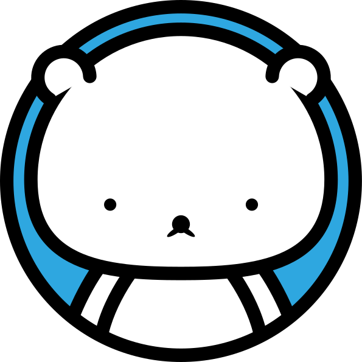

 | Kenton Liao |
Career
Project
Design
Certification
Hobby
AiArt
Career Highlights
Explore the following snapshots of my achievements across different domains.
Project
Digital Product Incubation Center
Developed knowledge-intensive products aligned with operational strategies and market trends.
Cultivated digital talents focusing on Web3.0 + AI, Gig Economy, and Foreign Workers.
Skills: Web Marketing Strategy, Product Development, Project Management, Digital Strategy, Project Coordination.
Digital Marketing Tools Implementation
Managed social platforms, including LINE, Facebook, Instagram, YouTube, and LinkedIn.
Executed advertising campaigns on Google Ads and Meta Ads.
Utilized marketing tools such as 電子豹 and LINE POINTS.
Skills: Web Marketing Strategy, Social Media Management, Digital Strategy, Digital Marketing, Digital Media.
Group Digital Transformation_Internal Enhancement
Conducted internal training on topics like organizational digital transformation and presentation skills.
Shared digital insights on mobile markets, AI, Web3.0 community management, private traffic, Podcasts, Martech, and more.
Skills: Web Marketing Strategy, Presentation Skills, Social Media Marketing, Public Speaking, Digital Marketing.
Media Product Channel Transformation
Infused digital value into traditional print media, aiding in sales efforts.
Integrated media data, proposed system concepts, and optimized workflows.
Managed social media layouts on LINE, Facebook, and Instagram.
Skills: Web Marketing Strategy, Social Media Management, Website Analysis, SEO, Business Strategy.
Official Website CMS Redesign
Conducted LAMP framework testing and internal demos.
Launched the official website on WordPress/Avada/RWD/SEO.
Achieved a 30% annual growth in user numbers from 2018 to 2022.
Skills: Web Marketing Strategy, Google Analytics, WordPress, SEO, Content Management System (CMS).
Collaborations with Academic Institutions and Corporate Clients
Planned and designed websites for various entities.
Successfully executed online/offline events and collaborations.
Skills: Project Management, Adobe Creative Suite, Digital Photography, Web Design, Project Planning.
Government and Public Agency Bidding Projects
Designed websites, visuals, and executed on-site setups for government initiatives.
Participated in projects like the Taoyuan County Government job fair, employment reports, and more.
Skills: Graphic Design, Project Management, Adobe Creative Suite, Web Design, Project Planning.